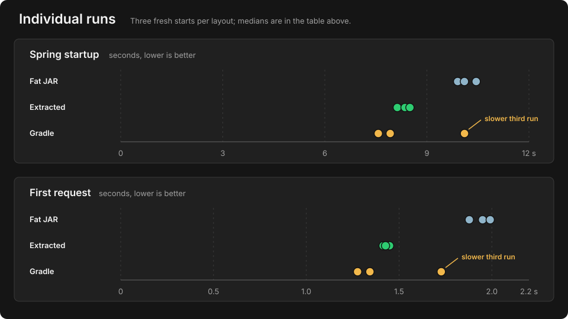

Spring Boot Fat JAR vs Extracted Layout vs Gradle Application Distribution
A small exploratory comparison of three ways to launch the same Spring Boot application, including a conventional Gradle application plugin distribution.
Question
How does a Gradle application plugin distribution compare with Spring Boot's executable fat JAR and official extracted layout for startup and first-request latency?
Why test this?
Spring Boot's executable JAR uses nested dependency JARs, while both the extracted Spring Boot layout and a conventional Gradle application distribution place dependencies on the filesystem. This experiment checks whether that difference produces similar runtime behavior in a simple local comparison.
Setup
I reused the same Spring Boot 4.1.1 application and constrained Alpine VM from the earlier fat JAR vs extracted-layout experiment. All three layouts ran on OpenJDK 25.0.4 with the same JVM profile.
This was intentionally quick: three fresh starts per layout, nine starts total.
Comparison
- Spring Boot executable fat JAR
- Spring Boot
jarmode=toolsextracted layout - Gradle application-plugin distribution
The intent is a small exploratory local experiment, not a general Maven-vs-Gradle benchmark.
Results
| Layout | Median startup | Median first request |
|---|---|---|
| Fat JAR | 10.103 s | 1.950 s |
| Extracted layout | 8.357 s | 1.427 s |
| Gradle application distribution | 7.921 s | 1.343 s |
Both filesystem-based layouts were faster than the executable fat JAR in this short run. Compared with the fat JAR, extracted reduced median startup and first-request latency by about 17% and 27%; Gradle reduced them by about 22% and 31%.

What this suggests
The Gradle application distribution behaved more like Spring Boot's extracted layout than the nested executable fat JAR. Gradle had the lowest medians, but the generated artifacts, dependency ordering, and launch paths were not byte-identical, so this does not show that Gradle itself is faster.
The useful conclusion is narrower: in this run, the gap between the fat JAR and either filesystem layout was much larger than the gap between the two filesystem layouts.
Limits
This is directional evidence, not a general benchmark. Every round used the same order: fat JAR, extracted layout, then Gradle. The third Gradle start was noticeably slower than its first two.